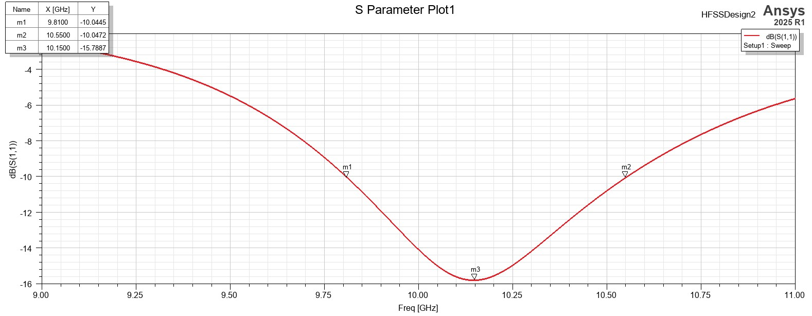
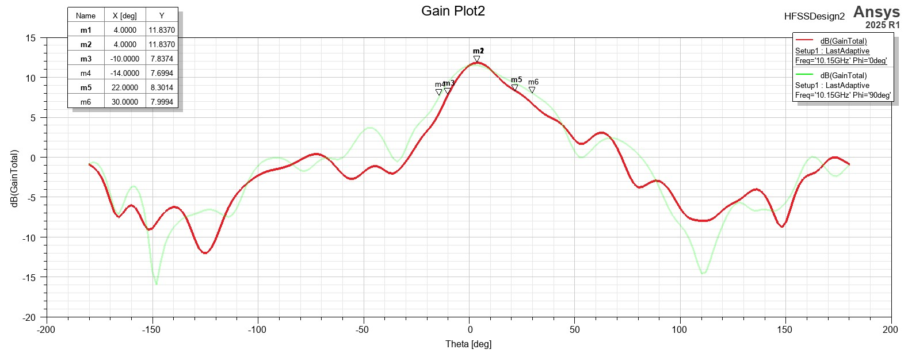
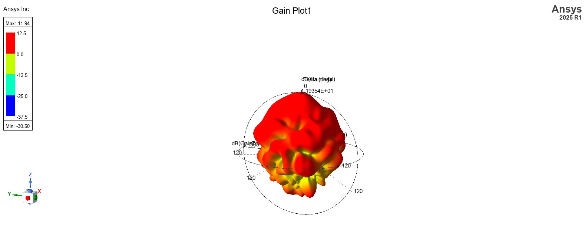
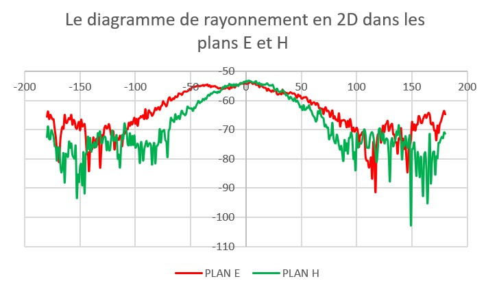

Paramètres : G = 70 mm · T = 1,5 mm · lp = 8,6 mm · d = 0
Patch élémentaire en bande X. Le substrat est configuré de manière à placer le patch sur la couche de cuivre de la face supérieure, tandis que la face inférieure est recouverte d'une métallisation continue constituant le plan de masse.

Bien adaptée lorsque S11 < −10 dB. La bande où l'antenne est bien adaptée va de 9,8 à 10,5 GHz : c'est la bande passante de l'antenne.
Le minimum de S11 autour de 10,15 GHz indique la fréquence optimale de fonctionnement.

Lobe principal centré autour de θ = 0° : rayonnement broadside, typique d'une antenne patch micro-ruban.
Le plan E présente une ouverture plus étroite que le plan H, ce qui traduit une concentration plus importante du champ dans cette direction. Les lobes secondaires restent faibles : directivité modérée.

Un lobe principal unique, orienté perpendiculairement au plan du patch. L'énergie est concentrée dans cette direction, les niveaux restent faibles hors axe : directivité limitée, cohérente avec un patch isolé.
La directivité dépend uniquement de la forme du diagramme, alors que le gain prend aussi en compte les pertes de l'antenne.

Même forme, mais lobe plus large et gain plus faible. Le maximum est bien dans l'axe principal. Une légère asymétrie apparaît sur certaines orientations : influence du montage réel et du positionnement de l'antenne.
Écarts dus aux pertes du substrat, aux tolérances de fabrication, au câble RF et aux imperfections de la chambre anéchoïde, absents de la simulation idéale.